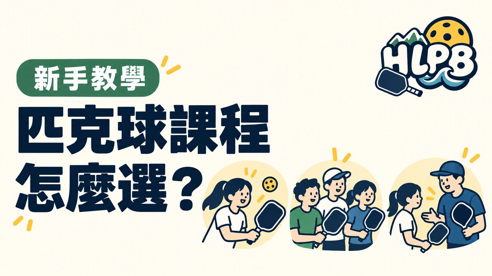

同樣叫匹克球課，內容可能差很多。有人只想先試試，有人想學會計分、之後參加球局，也有人想改善特定技術。先想清楚想學到哪一步，再選課。
| 課程形式 | 可以優先考慮的需求 | 報名前要確認 |
|---|---|---|
| 體驗課 | 還沒接觸，想先認識玩法 | 是否適合零基礎、是否提供器材 |
| 初階團體班 | 想有順序地學基本擊球與規則 | 完整課綱、程度要求與班級人數 |
| 進階課 | 已有基礎，想繼續練技術或戰術 | 入班條件、實際教學主題 |
| 一對一或小組課 | 希望針對自己的問題調整 | 學習目標、時數與費用包含項目 |
這是方便選課的整理，不是統一的課程標準。「初階」「進階」的名稱，不能取代實際課綱。 不同單位的安排可能不同，不確定時直接問是否適合自己的程度。
比較花蓮匹克球課程時，也記得一起看交通、場地、時間與請假規定。能持續參加、內容符合需求，比只比較單堂價格更有幫助。
上課與臨打也要分清楚。臨打主要是一起打球，不一定有教練帶領或完整教學。需要學規則與基本動作時，先確認報名的是課程還是球局。
臨打不等於上課，請確認是否有教練帶領。
參考來源：USA Pickleball 教學資源
最後查證：2026-10-10｜HLPB 編輯整理，參考來源見內文
返回文章列表